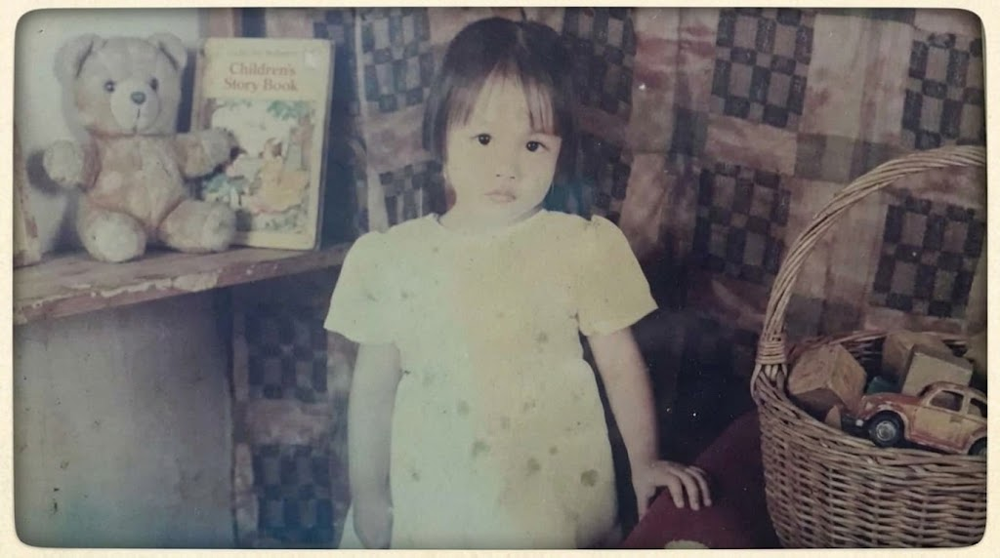
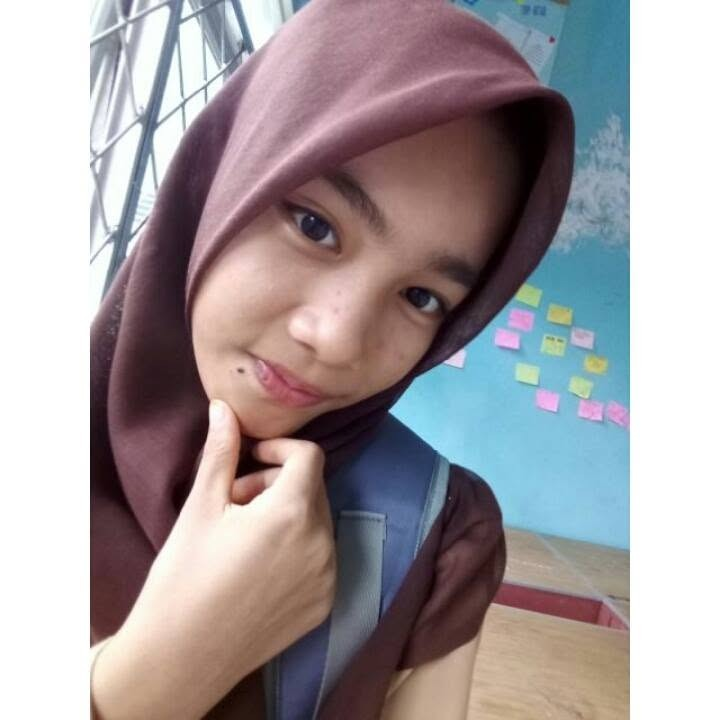

Di bawah gigil angin musim gugur Hokkaido yang memeluk sunyi,
biarkan ruang ini menjelma dermaga kecil untuk menaruh lelah sejenak.
Malam ini bukan sekadar perayaan bergantinya angka,
melainkan perayaan atas napas, keteguhan, dan usiamu yang senantiasa bertumbuh dalam diam.

Gadis kecil di bingkai ini mungkin tak banyak merekam riuhnya masa-masa yang pernah ada.
Kala jemari baru mengeja dunia, ketika garis takdir tiba-tiba membelok tajam, pikiran mungil itu dipaksa menelan kenyataan yang berubah warna.
Sebuah masa peralihan di mana benih ketabahan mulai diam-diam berakar, merawat mentalmu untuk bersiap menghadapi badai-badai panjang di masa depan.

Lalu waktu bergulir pada lekuk-lekuk masa remaja.
Diumur belasan yang mungkin merekam banyak senyum lugu di wajahmu. Namun di balik binar itu, tersimpan rapi sebuah resah.
Tak banyak yang benar-benar menyadari, seberapa terjal jalan yang sesungguhnya sedang dirimu tempuh sendirian pada masa itu.
Memasuki awal hingga pertengahan dua puluh, gelombang hidup menghantam jauh lebih keras.
badanmu bertarung memikul beban keluarga, meniti karir yang mendesak, hingga luka yang dibiarkan menetap.
Rentang waktu itu memaksamu menelan letih dalam senyap, namun berhasil menempa dirimu menjadi baja yang tak mudah patah oleh keadaan.
Di usiamu yang kini menginjak dua puluh delapan, sosokmu menjelma menjadi perempuan mandiri yang tahu persis ke mana harus melangkah. Membangun mimpi untuk usahamu kelak, dan menolak merendahkan nilai diri demi sekadar mencari sandaran.
Ke depan, aku tidak berniat mengambil alih kemudi dari tanganmu. Bersamaku, kau tetap bebas menjadi apa saja. Teruslah melangkah sebagai perempuan tangguh yang dirimu bangun dengan peluh. Namun ketahuilah, mandiri bukan berarti jiwa itu harus menanggung segalanya sendirian.
Jangan ragu untuk terus melangkah, karena aku akan selalu siap menjagamu dari dekat. Di saat dunia terlalu bising dan ragamu lelah menjadi baja, kamu selalu punya tempat untuk menepi. Aku akan selalu di sini, memberikan bahu sebagai sandaran paling aman untukmu melepas lelah.
Semua kerikil dan gesekan yang pernah kita lewati biarlah menjadi pelajaran yang mendewasakan. Mulai detik ini, tidak perlu lagi menoleh ke belakang. Fokuslah pada mimpimu di sana, dan biarkan aku yang memastikan bahwa tempatmu pulang akan selalu kokoh, hangat, dan siap menyambutmu.
Selamat bertambah umur, sayang. 🤎
— Riswan —